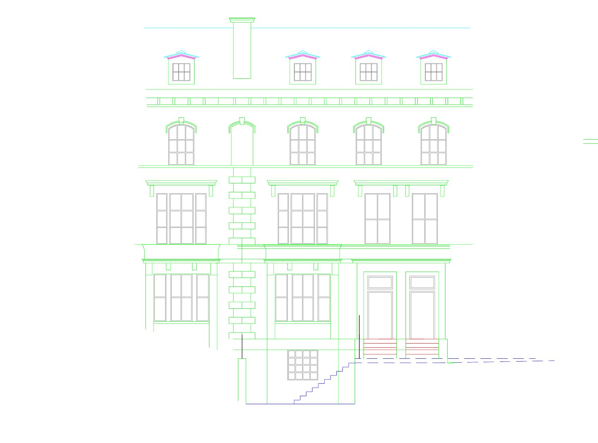

Laser scanned CAD drawings accurate to within 2 to 5mm, delivered in as little as 5 working days.
Get a QuoteIf you are an architect, planning consultant or developer working on an existing building in the North West, a measured building survey is the foundation your project starts from. We deliver accurate CAD floor plans, elevations, cross sections and roof plans captured using advanced laser scanning technology across Liverpool, Manchester, Chester, Wigan, Warrington, Southport and the wider North West region.
Advanced laser scanning captures every dimension to within 2 to 5mm depending on survey scope, so the drawings your design team works from reflect exactly what is on site.
Every drawing is quality checked before delivery. Open the file and trust the numbers. Supplied in your preferred format and to your practice drawing standards.
CAD ready outputs delivered in as little as 5 working days from the site visit, keeping your project on programme from day one.

A measured building survey is a precise, scaled record of an existing building's physical dimensions. Using advanced laser scanning, we capture the exact positions of walls, floors, ceilings, windows, doors, structural elements and architectural features, producing a complete set of CAD drawings that architects use as the base for any design or planning work.
Unlike scaled floor plans from estate agents or old building records, a laser scanned measured building survey gives you accurate data you can trust. Our surveys are accurate to within 2 to 5mm depending on scope, which is the standard architects and planning authorities expect.
Before design work begins on any existing building, whether it is an extension, conversion, refurbishment or change of use, you need an accurate set of existing drawings to design from. We deliver CAD files you can open and work in immediately, in your preferred format and to your drawing standards.
Planning applications for works to existing buildings require accurate existing and proposed drawings. Without a measured building survey as the base, your application is built on unreliable data. Local planning authorities across Liverpool, Manchester and Salford increasingly flag inaccurate surveys at validation stage.
Accurate existing building data at the front end of a development project reduces the risk of design revisions, programme delays and cost overruns. We work with developers across the North West on residential conversions, commercial refurbishments and mixed use schemes.
We discuss scope, drawing standards, output formats and access requirements before mobilising. No surprises on delivery.
Our surveyors attend site with advanced laser scanning equipment. A typical residential property takes one day on site.
Point cloud data is processed back in the office into clean, well structured CAD drawings.
Every set of drawings is reviewed before delivery to ensure accuracy and completeness.
CAD files delivered to your inbox in as little as 5 working days from site visit. For urgent projects, faster turnarounds are available.
A Matterport 360 virtual tour can be delivered alongside every measured building survey, reducing repeat site visits and giving your team a live reference of the property.